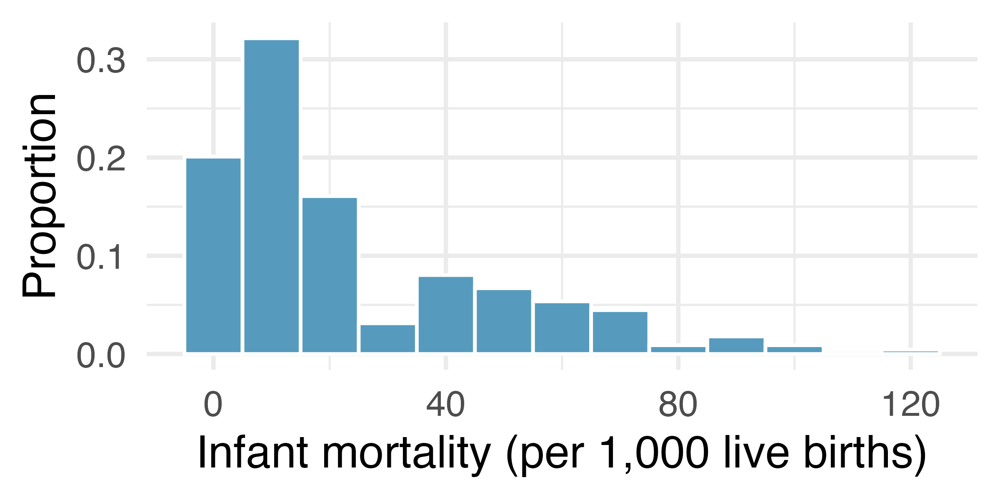

Numerical data (part 2)
Practice problems
Please work on the practice problems in your group. Problems with an asterisk \(^*\) will be assigned to the weekly problem set.
The infant mortality rate is defined as the number of infant deaths per 1,000 live births. This rate is often used as an indicator of the level of health in a country. The histogram below shows the distribution of estimated infant death rates for 224 countries for which such data were available in 2014. In particular, this is a relative frequency histogram, which shows proportions instead of raw counts on the y-axis:

Estimate \(Q_{1}\), the median \(m\), and \(Q_{3}\) from the histogram.
Would you expect the mean of this dataset to be smaller or larger than the median? Explain your reasoning.
Suppose that an exam has a total of 100 possible points, and the average score was an 85 with standard deviation of 15. Is the distribution of the scores on this exam symmetric? If not, what shape would you expect this distribution to have? Explain your reasoning.
For registered students at universities in the United States, do you expect the average age or the median age to be larger? Why?
(\(^*\)) The statistic \(\frac{\bar{x}}{m}\) can be used as a measure of skewness. Suppose we have a distribution where all observations are greater than 0 (i.e. \(x_{i} > 0\) for all observations \(i = 1,\ldots, n\)). What is the expected shape of the distribution under the following conditions? Explain your reasoning.
\(\frac{\bar{x}}{m} = 1\)
\(\frac{\bar{x}}{m} > 1\)
\(\frac{\bar{x}}{m} > 1\)